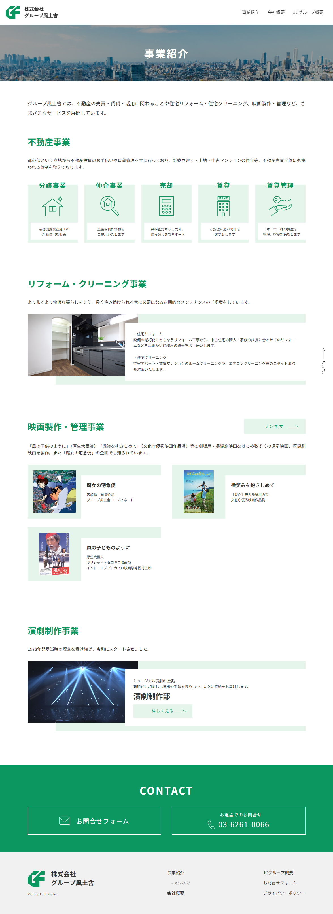
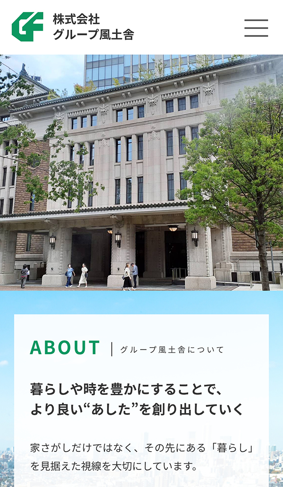
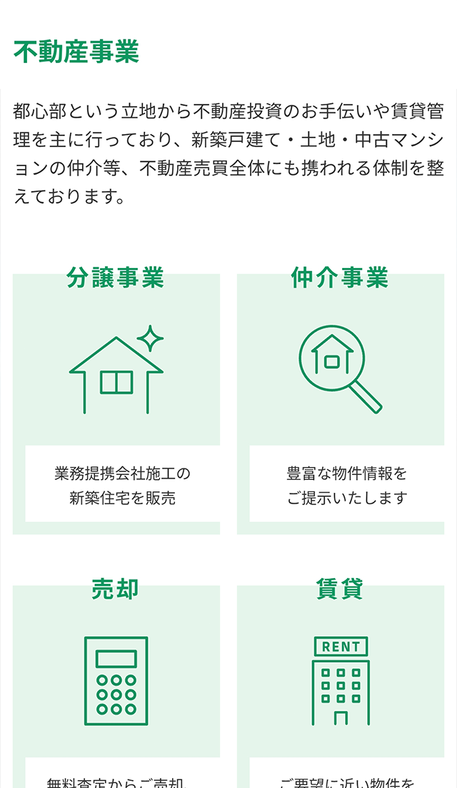
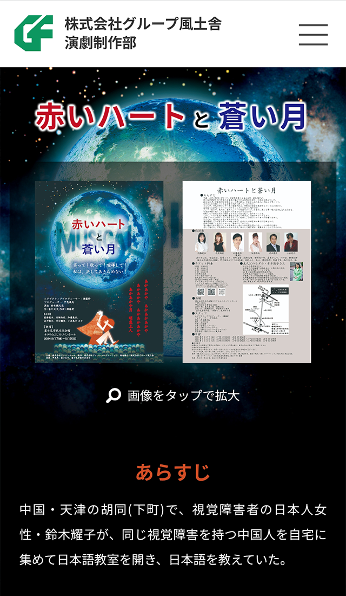

株式会社 グループ風土舎
- Category
- 不動産コーポレートサイト
- URL
- https://g-fudosha.com/
- Year
- 2022年
- Project
- WEBサイト新規
- Part
- 情報設計 / 画面設計 / UIデザイン / フロントエンド実装
- Tool
- Photoshop / Illustrator / Dreamweaver / HTML / CSS / Javascript
不動産事業（売買・仲介・賃貸・管理）と演劇事業を展開する企業のコーポレートサイトを新規制作。情報設計からデザイン、コーディングまで一貫して担当した。





背景・課題
不動産と演劇という異なる領域を扱う多角的企業の新規サイト立ち上げ案件。
性質の異なる事業を整理し、企業としての一体感を表現することが課題。
不動産では信頼性、演劇事業では情報のわかりやすさが求められるため、トーンの両立と情報構造の整理が重要なテーマ。
演劇事業は不動産情報と混ざると分かりづらくなるため、独立したWEBサイトとして制作した。
制作フロー
情報設計
不動産事業を中心に情報整理し、
演劇事業は独立サイトとして設計。
ワイヤーフレーム
各事業の優先順位を明確化し、
目的別にアクセスできる構造を設計。
デザイン設計
不動産事業は信頼感を重視。
演劇事業は独立サイトとして
情報の見やすさを優先して設計。
実装
レスポンシブ対応を前提に構築。
意識したこと
事業構造の明確化
不動産事業と演劇事業を分けて整理し、トップページから目的別に分岐できる導線を設計。
ブランドトーンの統一
配色・余白・タイポグラフィを統一した。
階層設計とナビゲーション
グローバルナビゲーションを事業別に整理し、パンくずリストで現在地が明確になる構造を構築。
迷わないUI設計
情報量は多くないため、シンプルでわかりやすいレイアウトを設計し、スマートフォンでも閲覧性を担保。
成果
- 不動産事業と演劇事業を分けることで、各事業情報が明確に伝わる構造を構築。
- 事業間で迷わない情報導線を確立。
- シンプルでわかりやすいUI設計を実現。
ふりかえり・改善点
多角的な事業をひとつのサイトで表現する難しさと面白さを実感した案件でした。
制作を通じて、事業ごとの情報整理や導線設計の重要性を改めて認識いたしました。
今後はユーザー行動データをもとに、事業間の回遊導線をさらに最適化してまいりたいと考えております。
また、各事業ごとのコンテンツ拡張を見据えた更新設計についても、より具体的な提案ができるよう改善してまいりたいと考えております。